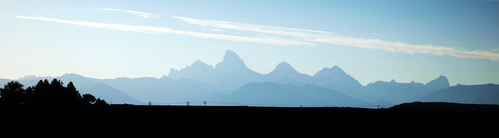
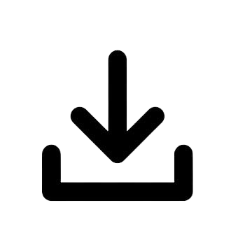

Portfolio
Accessible here is a collection of my applied interests, showcasing my exploration into different topics to find my niche. Here you'll find links to my Github repositories and a comprehensive view of my resume. Whether you're looking to understand my professional background, or see the practical application of my skills, this collection provides a thorough insight.
My Resume
Click to download my resume for a detailed look at my experience and qualifications.
My Projects
Weather App
A simple weather app created using Java and Open-Meteo API
GIS Web App
An exploration into the capabilities of GIS mapping using ArcGIS
Web Design/Development
A class project demonstrating my HTML/CSS knowledge along with this site.